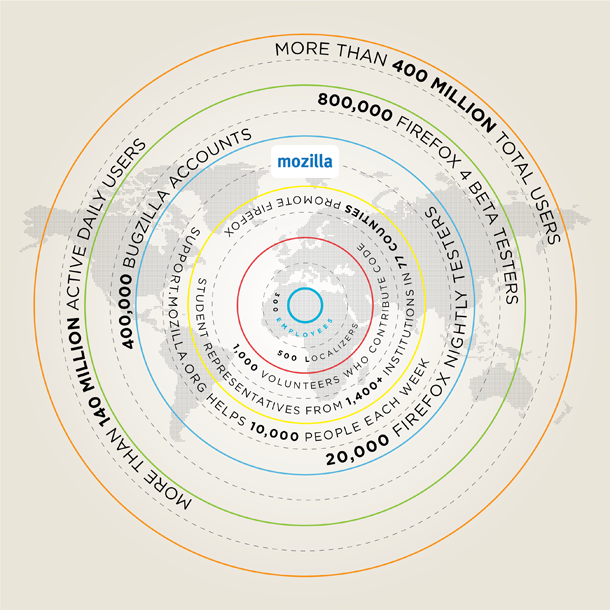

A Competitive World
November 18, 2010
Firefox 4 is going to be great.
We've made dramatic speed and performance advancements across the board in Firefox 4. Everything from startup time to page load speed to graphics and JavaScript performance are screaming fast in Firefox 4 due to major improvements to our JavaScript engine, including the addition of the new JägerMonkey JIT compiler and support for hardware accelerated graphics. The Firefox 4 performance numbers speak for themselves, both in comparison to previous versions of Firefox and in comparison to other modern Web browsers.
Firefox 4 has a fresh and streamlined look to make it easy for people to engage with the Web the way they want. Today, many of us use the Web in complex and idiosyncratic ways. We "live" in a few website applications, we visit many other websites briefly or repeatedly, we interweave work and personal tasks, we share, we complete many quick tasks in the midst of ongoing interaction with other websites.
To make these experiences effortless and fun, we've developed features to reduce the complexity of navigating today's web. These include enabling "app tabs" that are always instantly available, placing tabs on top of the URL bar, and Panorama, a highly visual approach to grouping related websites. Firefox 4 also integrates Firefox Sync to offer people an encrypted and seamless Web experience across desktop and mobile devices. Firefox Sync gives us access to our bookmarks, browser history, saved passwords and recently open browser tabs, no matter where we are. Early adopters can check out the most recent beta, general consumers should wait until we get to a final release.
In addition, Mozilla plays a key role in pushing the industry to adopt open Web standards like HTML5. Firefox 4 adds considerable new capabilities to the Web platform by pioneering support for Web technologies like the <video> tag and the WebM codec which enable video without plugins, and WebGL for great 3D graphics. It also improves existing tools like CSS, Canvas and SVG to make exciting Web pages. Firefox 4 enables developers to create rich new experiences on the Web.
We couldn't build such an amazing Firefox without our community of contributors and beta testers. They are exceptional, and a key part of the reason why the future of Firefox has so much promise.
Mozilla has tens of thousands of people contributing code and helping to localize and evangelize Firefox, and we've worked to expand/increase the ways that all Firefox users can participate in making Firefox better. With Firefox 4 Beta, we introduced a Feedback Add-on from Mozilla Labs Test Pilot, which lets people opt-in to take part in anonymous studies that help us make Firefox a better experience. This addition encourages feedback and gives our beta testers a voice. More than 1 million people have opted-in to participate in Test Pilot studies and have provided hundreds of thousands of pieces of feedback about Firefox 4 so far. Mozilla also recently launched a community care program called "Army of Awesome" to enable Firefox users to respond to each other and answer support questions on Twitter. In the first couple of weeks, hundreds of volunteers have already begun responding to thousands of user requests on Twitter.
The browser world is now intensely competitive and products are improving constantly. Firefox continues to be at the forefront of technology and user experience. Firefox brings a great product and Mozilla's vision of openness and empowerment directly to more than 400 million people in more than 80 languages. We also spur these developments indirectly by serving as an "honest broker" showing what Internet life can be, and encouraging others to build products that incorporate openness and individual control. This is an immense success for Mozilla.